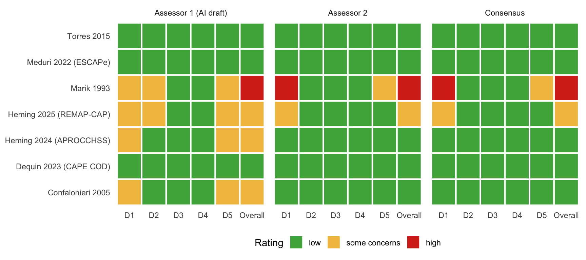

Code
library(targets)
library(dplyr)
library(tidyr)
library(ggplot2)
library(knitr)s <- tar_read(all_summary)
rob <- tar_read(rob_tbl)
labels <- tar_read(trials_tbl) |> select(trial_id, study_label)
rating_levels <- c("low", "some concerns", "high")
domains <- c(d1 = "D1 Randomisation", d2 = "D2 Deviations from intended interventions",
d3 = "D3 Missing outcome data", d4 = "D4 Outcome measurement",
d5 = "D5 Selection of the reported result")
# Consensus domain ratings are recorded in consensus_note as "D1 x; D2 x; D3 x; D4 x; D5 x; overall x"
parse_consensus <- function(note) {
pat <- "D1 ([a-z ]+); D2 ([a-z ]+); D3 ([a-z ]+); D4 ([a-z ]+); D5 ([a-z ]+); overall ([a-z ]+)\\."
m <- regmatches(note, regexec(pat, note))
t(vapply(m, \(x) if (length(x) == 7) x[2:7] else rep(NA_character_, 6), character(6)))
}
cons <- parse_consensus(rob$consensus_note)
rob[paste0("c_", c(names(domains), "overall"))] <- as.data.frame(cons)
stopifnot(identical(rob$c_overall, rob$consensus_overall))
rob <- left_join(rob, labels, by = "trial_id")
long <- rob |>
select(trial_id, study_label, final_set, matches("^(a1|a2|c)_(d[1-5]|overall)$")) |>
pivot_longer(-c(trial_id, study_label, final_set), names_to = c("who", "domain"), names_sep = "_",
values_to = "rating") |>
filter(!is.na(rating)) |>
mutate(who = factor(who, c("a1", "a2", "c"), c("Assessor 1 (AI draft)", "Assessor 2", "Consensus")),
rating = factor(rating, rating_levels))
prim <- filter(long, final_set == "primary")
both <- prim |> filter(who != "Consensus") |>
pivot_wider(id_cols = c(study_label, domain), names_from = who, values_from = rating)
dom_both <- filter(both, domain != "overall")
ov_both <- filter(both, domain == "overall")Risk of bias was assessed with the Cochrane RoB 2 tool for the outcome used in the analysis, all-cause mortality at each trial’s primary-analysis timepoint, for the effect of assignment to the intervention. Each trial is rated low, some concerns or high in five domains, and the overall rating follows the RoB 2 rule: low only if every domain is low, high if any domain is high or if several domains with some concerns together substantially lower confidence in the result, otherwise some concerns. For trials whose data come from a published subgroup (APROCCHSS, Tongyoo), domain 5 also records whether the subgroup was pre-specified.
All results on this page are provisional. Two assessors rated the seven primary-set trials independently: assessor 1 is an AI-generated draft built from the signalling information extracted for each trial, and assessor 2 is a human reviewer (M. Annes, 2 November 2026). A consensus for these seven trials was recorded on 4 November 2026 on the project lead’s decision, adopting the proposals of the reconciliation sheet (RoB2_reconciliation_2026-11-04.md), without a meeting with the second assessor, whose confirmation is pending. The 11 sensitivity-set trials have only the assessor-1 draft. Wafy 2021, which assessor 1 rated high risk of bias, was excluded on study-integrity grounds on 10 November 2026 and is not shown.
ggplot(mutate(prim, domain = factor(domain, c(names(domains), "overall"), c(toupper(names(domains)), "Overall"))),
aes(domain, study_label, fill = rating)) +
geom_tile(colour = "white", linewidth = 0.8) +
facet_wrap(~who) +
scale_fill_manual(values = c(low = "#4daf4a", `some concerns` = "#f2c14e", high = "#d7301f"), drop = FALSE) +
labs(x = NULL, y = NULL, fill = "Rating") +
theme_minimal() +
theme(panel.grid = element_blank(), legend.position = "bottom")
prim |>
mutate(domain = factor(domain, c(names(domains), "overall"), c(sub(" .*", "", domains), "Overall"))) |>
pivot_wider(id_cols = c(study_label, who), names_from = domain, values_from = rating) |>
arrange(study_label, who) |>
rename(Trial = study_label, Assessment = who) |>
kable(caption = paste0("Primary set: domain and overall ratings. ", paste(domains, collapse = "; "), "."))| Trial | Assessment | D1 | D2 | D3 | D4 | D5 | Overall |
|---|---|---|---|---|---|---|---|
| Confalonieri 2005 | Assessor 1 (AI draft) | some concerns | low | low | low | some concerns | some concerns |
| Confalonieri 2005 | Assessor 2 | low | low | low | low | low | low |
| Confalonieri 2005 | Consensus | low | low | low | low | some concerns | some concerns |
| Dequin 2023 (CAPE COD) | Assessor 1 (AI draft) | low | low | low | low | low | low |
| Dequin 2023 (CAPE COD) | Assessor 2 | low | low | low | low | low | low |
| Dequin 2023 (CAPE COD) | Consensus | low | low | low | low | low | low |
| Heming 2024 (APROCCHSS) | Assessor 1 (AI draft) | some concerns | low | low | low | some concerns | some concerns |
| Heming 2024 (APROCCHSS) | Assessor 2 | low | low | low | low | low | low |
| Heming 2024 (APROCCHSS) | Consensus | low | low | low | low | low | low |
| Heming 2025 (REMAP-CAP) | Assessor 1 (AI draft) | some concerns | some concerns | low | low | some concerns | some concerns |
| Heming 2025 (REMAP-CAP) | Assessor 2 | some concerns | low | low | low | low | some concerns |
| Heming 2025 (REMAP-CAP) | Consensus | some concerns | some concerns | low | low | some concerns | some concerns |
| Marik 1993 | Assessor 1 (AI draft) | some concerns | some concerns | low | low | some concerns | high |
| Marik 1993 | Assessor 2 | high | low | low | low | some concerns | high |
| Marik 1993 | Consensus | high | low | low | low | some concerns | high |
| Meduri 2022 (ESCAPe) | Assessor 1 (AI draft) | low | low | low | low | low | low |
| Meduri 2022 (ESCAPe) | Assessor 2 | low | low | low | low | low | low |
| Meduri 2022 (ESCAPe) | Consensus | low | low | low | low | low | low |
| Torres 2015 | Assessor 1 (AI draft) | low | low | low | low | low | low |
| Torres 2015 | Assessor 2 | low | low | low | low | low | low |
| Torres 2015 | Consensus | low | low | low | low | low | low |
The two assessors gave the same overall rating for 5 of 7 trials and the same rating in 27 of 35 domain judgements. The disagreements were:
cons_long <- prim |> filter(who == "Consensus") |> select(study_label, domain, Consensus = rating)
both |>
filter(`Assessor 1 (AI draft)` != `Assessor 2`) |>
left_join(cons_long, by = c("study_label", "domain")) |>
mutate(domain = ifelse(domain == "overall", "Overall", toupper(domain))) |>
rename(Trial = study_label, Domain = domain) |>
kable(caption = "Domain and overall judgements on which the assessors disagreed, with the recorded consensus.")| Trial | Domain | Assessor 1 (AI draft) | Assessor 2 | Consensus |
|---|---|---|---|---|
| Heming 2024 (APROCCHSS) | D1 | some concerns | low | low |
| Heming 2024 (APROCCHSS) | D5 | some concerns | low | low |
| Heming 2024 (APROCCHSS) | Overall | some concerns | low | low |
| Confalonieri 2005 | D1 | some concerns | low | low |
| Confalonieri 2005 | D5 | some concerns | low | some concerns |
| Confalonieri 2005 | Overall | some concerns | low | some concerns |
| Marik 1993 | D1 | some concerns | high | high |
| Marik 1993 | D2 | some concerns | low | low |
| Heming 2025 (REMAP-CAP) | D2 | some concerns | low | some concerns |
| Heming 2025 (REMAP-CAP) | D5 | some concerns | low | some concerns |
Most disagreements were matters of judgement on the same facts: whether a baseline imbalance looks like chance (Confalonieri, APROCCHSS), how to treat a trial without a registration or published protocol (Confalonieri, Marik) and how cautious to be about an open-label platform trial whose analysis plan for this comparison was posted after the arm stopped (REMAP-CAP). One rested on a missing fact: assessor 2’s REMAP-CAP sheet did not mention that 23% of control patients received a systemic corticosteroid, which bears on domain 2. The consensus applied one rule to the two trials without a registration or protocol (Confalonieri and Marik: “no information” on a pre-specified plan, so domain 5 some concerns), followed the RoB 2 algorithm where the assessors’ answers implied a different rating than the one given (Marik domains 1 and 2), and rated APROCCHSS low on the evidence of the open-access design paper, which lists community-acquired pneumonia as an a priori subgroup.
rob |>
filter(final_set == "primary") |>
mutate(Basis = trimws(sub(".*overall [a-z ]+\\.", "", consensus_note)),
Basis = sub("^Basis: ", "", Basis)) |>
select(Trial = study_label, `Consensus overall` = consensus_overall, Basis) |>
arrange(Trial) |>
kable(caption = "Recorded consensus and its basis (from the consensus notes in `analysis/rob2_assessments.csv`).")analysis/rob2_assessments.csv).
| Trial | Consensus overall | Basis |
|---|---|---|
| Confalonieri 2005 | some concerns | no registration or published protocol (2000 to 2003 trial), so ‘no information’ on a pre-specified plan, the same rule as for Marik; the trial also stopped at an interim efficacy boundary. |
| Dequin 2023 (CAPE COD) | low | Low in both assessments. |
| Heming 2024 (APROCCHSS) | low | the design paper (Annane 2016, Ann Intensive Care 6:43; open access) lists community-acquired pneumonia as an a priori defined subgroup and 28-day mortality as a pre-specified secondary endpoint, randomisation was stratified by centre only with the sequence adequately concealed, and the trial remained blinded when the analysis plan was written. The NEJM protocol and SAP file itself was not readable (HTTP 403). |
| Heming 2025 (REMAP-CAP) | some concerns | response-adaptive allocation with 536 vs 122 imbalance and a labelling error (D1); open-label with 23% (28/122) of control patients receiving a systemic corticosteroid (D2); comparison-specific analysis plan written after the arm stopped for futility (D5). |
| Marik 1993 | high | assessor 2’s D1 (concealment not described plus baseline imbalance gives high under the RoB 2 algorithm); D2 low by the algorithm. |
| Meduri 2022 (ESCAPe) | low | Low in both assessments (ad hoc futility interim noted, kept low). |
| Torres 2015 | low | Low in both assessments (baseline septic-shock imbalance judged chance). |
long |>
filter(final_set == "sensitivity") |>
mutate(domain = factor(domain, c(names(domains), "overall"), c(sub(" .*", "", domains), "Overall"))) |>
pivot_wider(id_cols = study_label, names_from = domain, values_from = rating) |>
arrange(study_label) |>
rename(Trial = study_label) |>
kable(caption = "Sensitivity-set trials: assessor-1 (AI) draft ratings, not yet reviewed by a second assessor.")| Trial | D1 | D2 | D3 | D4 | D5 | Overall |
|---|---|---|---|---|---|---|
| Blum 2015 (STEP) | low | low | low | low | low | low |
| Fernández-Serrano 2011 | some concerns | some concerns | some concerns | low | low | some concerns |
| Hagman 2026 | low | some concerns | low | low | some concerns | some concerns |
| Lucinde 2025 (SONIA) | low | some concerns | some concerns | low | low | some concerns |
| McHardy 1972 | high | some concerns | some concerns | low | some concerns | high |
| Meijvis 2011 (Ovidius) | low | low | low | low | some concerns | some concerns |
| Mikami 2007 | some concerns | some concerns | low | low | high | high |
| Nafae 2013 | some concerns | some concerns | some concerns | low | some concerns | high |
| Snijders 2010 | low | low | low | low | low | low |
| Tongyoo 2016 | low | low | low | low | low | low |
| Wittermans 2021 (Santeon-CAP) | low | low | low | low | low | low |
These ratings have not been checked by a second assessor and do not feed any fit; the low-risk-of-bias analysis below is restricted to the primary set.
The pre-specified sensitivity analysis S-ii restricts the primary short-term analysis (F1) to trials rated low risk of bias overall. Because the assessors’ low-risk sets differ, it is run once for each assessor and once for the consensus.
te <- tar_read(trial_effects_F1)
raw_or <- \(lab) pr(te$raw_or[te$trial == lab])
low_set <- \(col) paste(sort(rob$study_label[rob$final_set == "primary" & rob[[col]] %in% "low"]), collapse = ", ")
tibble(id = c("F1_default", "S_ii_a1_F1", "S_ii_a2_F1", "S_ii_cons_F1"),
Trials = c("all seven primary-set trials", low_set("a1_overall"), low_set("a2_overall"), low_set("consensus_overall"))) |>
left_join(s, by = "id") |>
transmute(Fit = fit, Trials, `OR (95% CrI)` = or_ci(OR_median, OR_q025, OR_q975),
`P(OR<1)` = pr(P_OR_lt_1), `P(OR<0.833)` = pr(`P_OR_lt_0.833`)) |>
kable(caption = "F1 restricted to trials at low risk of bias (reference prior).")| Fit | Trials | OR (95% CrI) | P(OR<1) | P(OR<0.833) |
|---|---|---|---|---|
| F1 primary (D2a): ESCAPe in-hospital; REMAP-CAP ICU-discharge contrast, log-OR 0.399, SE 0.487 | all seven primary-set trials | 0.67 (0.39–1.06) | 0.96 | 0.85 |
| S-ii low risk of bias only, assessor 1 (AI draft), F1 | Dequin 2023 (CAPE COD), Meduri 2022 (ESCAPe), Torres 2015 | 0.74 (0.40–1.40) | 0.84 | 0.66 |
| S-ii low risk of bias only, assessor 2, F1 | Confalonieri 2005, Dequin 2023 (CAPE COD), Heming 2024 (APROCCHSS), Meduri 2022 (ESCAPe), Torres 2015 | 0.62 (0.34–1.03) | 0.97 | 0.90 |
| S-ii low risk of bias only, consensus, F1 | Dequin 2023 (CAPE COD), Heming 2024 (APROCCHSS), Meduri 2022 (ESCAPe), Torres 2015 | 0.69 (0.43–1.15) | 0.94 | 0.81 |
With three to five trials every interval is wide, and the estimate depends on which assessor’s set is used. The sets differ by Confalonieri and APROCCHSS, which are low risk for assessor 2 only; both favour corticosteroids (raw OR 0.05 and 0.61), Confalonieri most strongly of any primary-set trial (0 of 23 against 7 of 23 deaths). The sensitivity page discusses these fits alongside the other sensitivity analyses. GRADE has not yet been done.